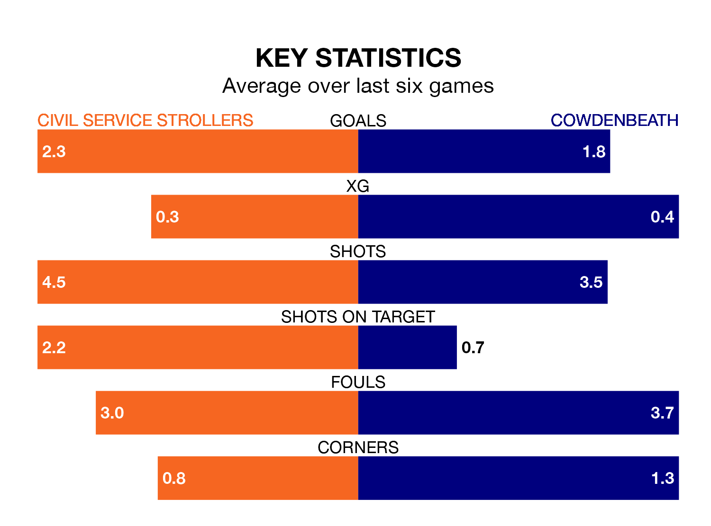

Civil Service Strollers host Cowdenbeath on Saturday at Civil Service Sports Ground in Lowland Football League.
In their last league match, on January 20, Civil Service Strollers beat Edinburgh University 3-0 at home.
Cowdenbeath lost, 2-0 at home against Bo'ness United on January 13.
With 37 goals in 23 games so far this season, Civil Service Strollers are scoring at below the league average rate with 1.6 goals per game. But they are conceding fewer than average too, letting in 25 goals at a rate of 1.1 per game.
Cowdenbeath, meanwhile, are average scorers, with 1.7 goals per game. They have conceded 1.6 goals per game.
The hosts are sixth in the table after 23 games, of which they have won 12 and drawn four, earning 40 points.
The away team are four places behind Civil Service Strollers in 10th, with seven wins and eight draws putting them on 29 points.
Civil Service Strollers are in good form in Lowland Football League, with four wins and a draw from their last six games.
With three wins and a draw over that period, Cowdenbeath's form is worse – they have taken 10 points from 18, compared to the home side's 13.
In the last five years, Civil Service Strollers and Cowdenbeath have played each other on four occasions. Civil Service Strollers won three of them and they drew once.
On average, Civil Service Strollers scored 2.5 goals and Cowdenbeath 1.5 in those matches.
Their last meeting was on August 5, when they played out a 2-2 draw.
Updated: 08:51 (UTC), 25/01/24